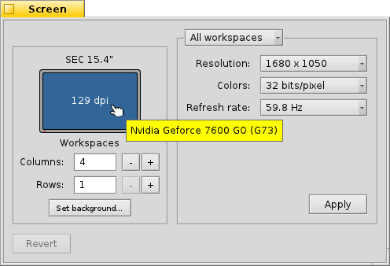

Näyttöasetukset
Näyttöasetukset
| Työpöytäpalkki: | ||
| Sijainti: | /boot/system/preferences/Screen | |
| Asetukset: | ~/config/settings/system/app_server/workspaces ~/config/settings/kernel/drivers/vesa - Vain kun suoritetaan VESA-tilassa. ~/config/settings/Screen_data - Tallentaa paneelin ikkunasijainnin. |
Jokaisella työtilallasi voi ola oma resoluutio, värisyvyys ja virkistystaajuus.
Ylimmässä valikossa määrität, että koskeeko muutokset vain nykyistä työtilaa vai kaikkia työtiloja. Grafiikkakortistasi riippuen toiset valikot sisältävät kaikki tuetut resoluutio-, värisyvyys- ja virkistystaajuusasetukset.
Painikkeen napsauttamisen jälkeen grafiikkatila vaihtuu ja näkyviin ilmaantuu hälytysikkuna, joka kysyy, että pidetäänkö vai hylätäänkö muutokset. Jos et vastaa tuohon hälytykseen, grafiikkatila palaa entisiin asetuksiin 12 sekunnin kuluttua. Et ehkä näe hälytysikkunaa, jos näyttösi ei tue asetuksia.
On näppäinyhdistelmiä, jotka toimiva aina, ei vain silloin kun Näyttöasetukset on avoinna: VAIHTO CTRL ALT ESC asettavat videoturvallisen peräytymistilan. Se on kätevä, jos näyttö ei ilmoita oikein ja asetuksesi aiheuttavat näytön sekoittumisen tai menemisen mustaksi. Tässä ponnahtaa myös hälytys näkyviin ja jos et tee mitään 12 sekunnin aikana tai paina ESC-näppäintä, niin palaat takaisin.
Vasemmalla näet näyttösi esittelyn sillä valmistajalla ja mallilla, jonka se ilmoittaa ja sen resoluution pisteinä per tuuma (dpi). Hiiren kohdistimen pitäminen sen yllä näyttää työkaluvihjeen, joka kertoo grafiikkakortin nimen ja mitä ajuria se tukee. Muussa tapauksessa se sanoo "VESA", nopea vararatkaisu, joka toimi lähes jokaisessa laitteessa.
tuo takaisin ne asetukset, jotka olivat aktiivisia, kun Näyttöasetukset-sovellus käynnistettiin.
Vasemmalla alhaalla voit asettaa työtilojen lukumäärän ja järjestää ne sarakkeisiin ja riveihin sekä avata Tausta-asetukset-sovelluksen.